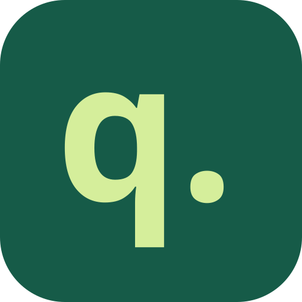

Imposta il tuo mese
Inserisci saldo, prossimo stipendio e somma che vuoi mettere da parte. Aggiungi le spese che devi ancora pagare.

quanto mi resta?Sai quanto hai. Scopri quanto puoi spendere ogni giorno fino al prossimo stipendio, tenendo conto delle spese previste e del risparmio da proteggere.
Contatta il progetto →Saldo: 1.200 € · Spese previste: 300 €
Risparmio da proteggere: 300 €
600 € disponibili per i prossimi 20 giorni.
Esempio illustrativoInserisci saldo, prossimo stipendio e somma che vuoi mettere da parte. Aggiungi le spese che devi ancora pagare.
Aggiorna i movimenti e ritrovali nello storico. Nell’app Android puoi aggiungerli anche dal widget.
I dati restano disponibili offline. Collegando un account puoi sincronizzarli con il cloud e ritrovarli su un altro dispositivo.
Quanto mi resta? non si collega al tuo conto bancario e non sposta denaro. Il budget giornaliero è una stima basata sui dati che inserisci: cambia quando aggiorni saldo, movimenti, scadenze o risparmio.
Leggi come sono gestiti i dati →